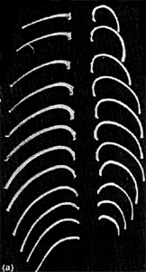
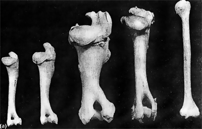
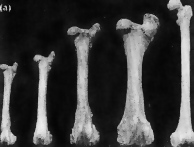

If partial skeletal remains are found, especially when no skull is apparent, animal bones may be mistaken for human bones. Distinguishing bones as human or animal may be difficult sometimes.
Animal Rib Bones (left) and Human Rib Bones (right)

2. Upper arm bones: Human upper arm bones (humerus) are used for lifting and, thus, tend to be smaller and more slender than animal limb bones. This is because humans are bipedal. Bipedal animals move using two legs; thus, the weight of the body is not carried on the bones within the arms. Most mammals are quadrupeds, which means they bear their weight on four limbs when they move.
In addition, the upper arm bones of a human have a smaller tubercle on the upper part of the bone. This is because a human shoulder joint is less stable because it lies in a relatively shallow shoulder blade. In other animals, the strong ligamentation around the upper part of the limb bones due to larger muscle attachment sites creates a larger tubercle with projections. (See the photograph below.)
Examples of Upper Arm or Limb Bones
Deer Sheep Cow Elk Human

Interestingly, two animals that have skeletal features that are remarkably similar to humans are the North American black bear and the domestic pig.
To the untrained eye, the bones in the paws of the North American black bear can be mistaken easily for human finger bones. Similarly, pig molars appear identical to human molars.
Examples of Upper Leg or Limb Bones
Deer Sheep Cow Elk Human

"Crime is terribly revealing. Try and vary your methods as you will, your tastes, your habits, your attitude of mind, and your soul is revealed by your actions."
Agatha Christie (English Detective, Novelist, and Playwright, 1890-1976)